概述
信息版本为：3.1.x
springmvc支持纯javaconfig模式，这里记录的为xml配置模式。
这次代码解析主要想弄明白以下几个部分内容：
-
标签如何被加载（例如：RequestMapping）
-
请求如何被处理到指定处理类
-
如何用标签进行数据格式的转换
-
异常是如何处理
-
请求参数如何映射
-
Servlet多线程在哪里实现
标签如何被加载
RequestMapping标签的加载必然是在启动过程中了，web项目直接加载web.xml。
以下为一个简单的web.xml配置，里面常用的配置用颜色标注。
+———————————————————————-+ | <?xml version="1.0" encoding="UTF-8"?\ | | | | <web-app xmlns:xsi="http://www.w3.org/2001/XMLSchema-instance" | | | | xmlns="http://java.sun.com/xml/ns/javaee" | | | | xsi:schemaLocation="http://java.sun.com/xml/ns/javaee | | http://java.sun.com/xml/ns/javaee/web-app_3_0.xsd" | | | | version="3.0"\ | | | | <display-name\webtest</display-name\ | | | | <!-- 提供ContextLoaderListener 并设置相关参数 --\ | | | | <context-param\ | | | | <param-name\contextConfigLocation</param-name\ | | | | <param-value\classpath:spring-core.xml</param-value\ | | | | </context-param\ | | | | <listener\ | | | | <listener-class\org. | | springframework.web.context.ContextLoaderListener</listener-class\ | | | | </listener\ | | | | <servlet\ | | | | <servlet-name\webtest</servlet-name\ | | | | <servlet-class\ | | org.springframework.web.servlet.DispatcherServlet</servlet-class\ | | | | <load-on-startup\1</load-on-startup\ | | | | </servlet\ | | | | <servlet-mapping\ | | | | <servlet-name\webtest</servlet-name\ | | | | <url-pattern\/</url-pattern\ | | | | </servlet-mapping\ | | | | <filter\ | | | | <filter-name\Set Character Encoding</filter-name\ | | | | <filter-class\org | | .springframework.web.filter.CharacterEncodingFilter</filter-class\ | | | | <init-param\ | | | | <param-name\encoding</param-name\ | | | | <param-value\utf8</param-value\ | | | | </init-param\ | | | | </filter\ | | | | <filter-mapping\ | | | | <filter-name\Set Character Encoding</filter-name\ | | | | <url-pattern\/*</url-pattern\ | | | | </filter-mapping\ | | | | </web-app\ | +———————————————————————-+
主要分为三类标签（其他标签作为辅助），listener、servlet、filter。
先看一下tomcat是如何加载它们的，tomcat启动时会调用 StandardContext的startInternal：
+———————————————————————-+ | //省略之前 | | | | // 加载listener | | | | if (ok) { | | | | if (!listenerStart()) { | | | | log | | **.error(sm.getString("standardContext.listenerFail")); | | | | ok = **false; | | | | } | | | | } | | | | //省略 | | | | // 加载fileter | | | | if (ok) { | | | | if (!filterStart()) { | | | | l | | og.error(sm.getString("standardContext.filterFail")); | | | | ok = false; | | | | } | | | | } | | | | // 加载初始化”load on startup”的servlet | | | | // Load and initialize all "load on startup" servlets | | | | if (ok) { | | | | if (!loadOnStartup(findChildren())){ | | | | lo | | g.error(sm.getString("standardContext.servletFail")); | | | | ok = false; | | | | } | | | | } | +———————————————————————-+
以上内容省略了其他的加载执行步骤，但是可以看到这三个加载顺序，在这里内容如下：
- listener
在web.xml中加载spring web的ContextLoaderListener，启动会调用contextInitialized方法，会根据加载spring容器，示例中会加载spring-core.xml配置文件。
- filter
加载配置中的Fileter，例如示例中的encoding处理
- servlet
servlet的加载和处理，在示例中就是springmvc核心的DispatcherServlet，在启动时会springmvc的配置文件，默认以项目名加”-servlet.xml”的配置文件，启动后所有的servlet请求都会到这里进行统一分发处理。
DispatcherServlet是springmvc的核心，所有的请求都是通过它来处理的，类的结构如下：
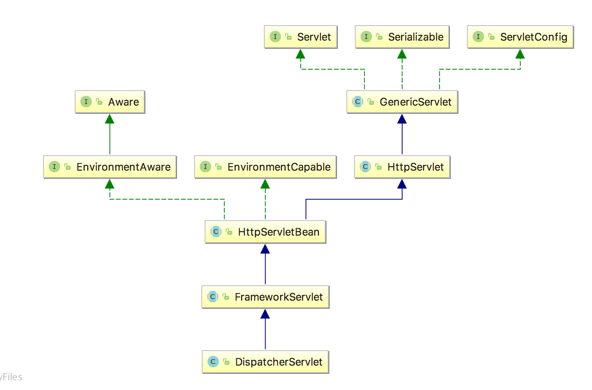{width=”5.768055555555556in” height=”3.7979166666666666in”}
通过上图能够看出DispatcherServlet是实现了Servlet，集成了GenericServlet、HttpServlet，这三个都是javax.servlet.http包中的，Servlet提供了基本的init、service、destroy方法，GenericServlet提供了通用的实现，而HttpServlet实现了具体的Http相关的功能（例如：doGet、doPut、doPost、doDelete、doHead、doTrace、doOption）。
HttpServletBean就是Springmvc的具体的实现了。在FrameworkServlet中实现了构造Springmvc容器（parent 为spring容器）。
servlet的基本操作如下图：
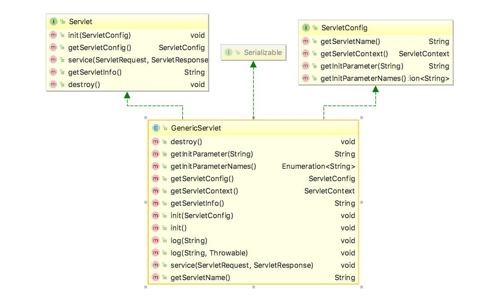{width=”5.768055555555556in” height=”3.428472222222222in”}
比较重要的就是servlet的init、service、destroy了。在tomcat的代码中，tomcat启动项目时，会在StandardWrapper的loadServlet方法中new Instance出DispatcherServlet，然后执行init方法。
+———————————————————————-+ | package org.apache.catalina.core; | | | | public class StandardWrapper extends ContainerBase | | | | implements ServletConfig, Wrapper, NotificationEmitter { | | | | //省略 | | | | public synchronized Servlet loadServlet() throws ServletException { | | | | //省略 | | | | InstanceManager instanceManager = | | ((StandardContext)getParent()).getInstanceManager(); | | | | try { | | | | //这里的servletClass | | 就是org.springframework.web.servlet.DispatcherServlet | | | | // newInstance | | 方法实现为通过类加载器找到class，然后clazz.newInstance() | | | | servlet = (Servlet) instanceManager.newInstance(servletClass); | | | | } catch (ClassCastException e) { | | | | //省略 | | | | //调用servlet的init方法 | | | | initServlet(servlet); | | | | //省略 | | | | } | | | | } | +———————————————————————-+
在init方法执行后，会调用FrameworkServlet的initServletBean方法，进行springmvc的容器加载。加载过程中，会将spring容器设为parent容器，并加载servlet配置文件。
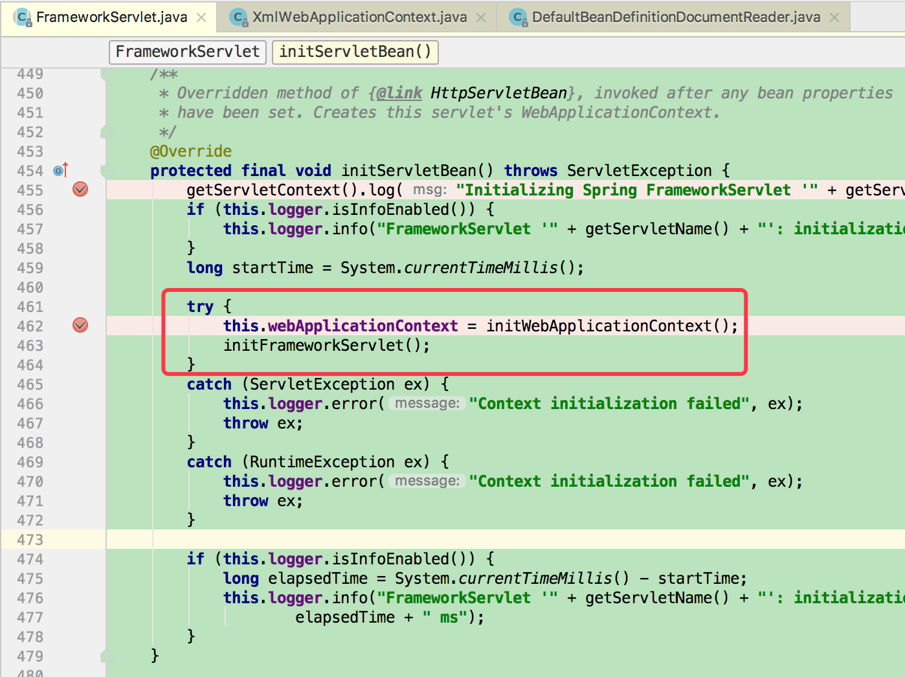{width=”5.768055555555556in” height=”4.315972222222222in”}
加载配置文件会进行解析，解析过程使用org.springframework.web.servlet.config. AnnotationDrivenBeanDefinitionParser进行处理，例如<mvc:annotation-driven\、<mvc:argument-resolvers\等等标签。在处理这些标签的同时，会构建RequestMappingHandlerMapping实例的定义，并注册到Springmvc容器中。
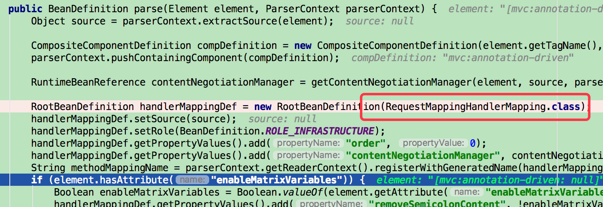{width=”5.768055555555556in” height=”1.9854166666666666in”}
然后会执行ApplicationContext的refresh动作，对类进行实例化。
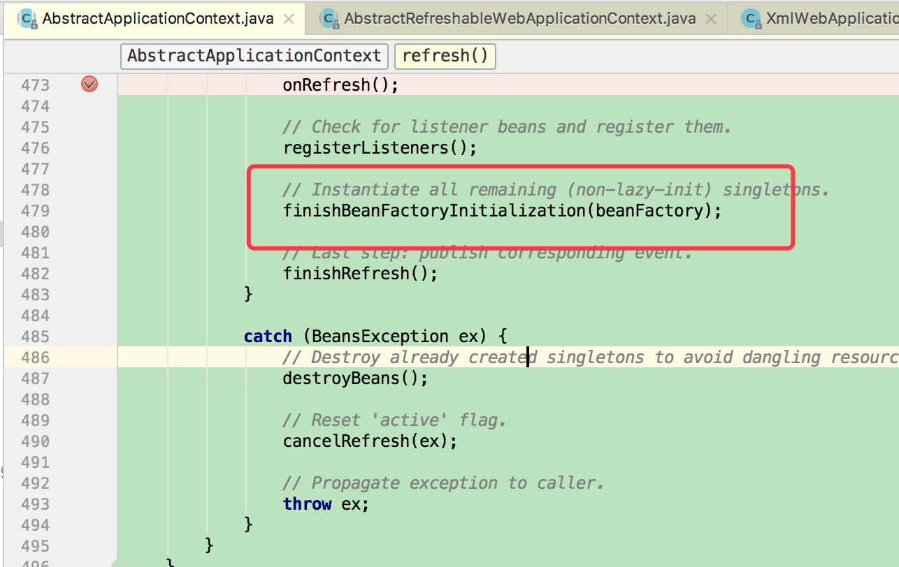{width=”5.768055555555556in” height=”3.642652012248469in”}
方法如何执行
由于对tomcat注册了DispatchServlet，所以当有符合该项目路径进行请求后，tomcat会分配当该模块中，例如请求时个Post方法，则会调用doPost方法。
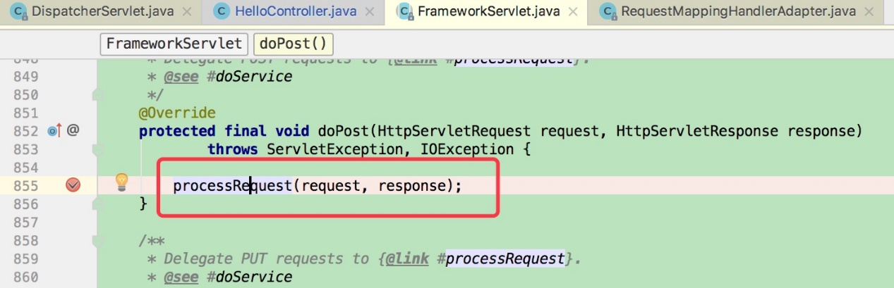{width=”5.768055555555556in” height=”1.8624376640419948in”}
然后会调用到DispatchServlet的doService，最后会执行到doDispatch方法。
+———————————————————————-+ | protected void doDispatch(HttpServletRequest request, | | HttpServletResponse response) throws Exception { | | | | HttpServletRequest processedRequest = request; | | | | HandlerExecutionChain mappedHandler = null; | | | | boolean multipartRequestParsed = false; | | | | WebAsyncManager asyncManager = | | WebAsyncUtils.getAsyncManager(request); | | | | try { | | | | ModelAndView mv = null; | | | | Exception dispatchException = null; | | | | try { | | | | processedRequest = checkMultipart(request); | | | | multipartRequestParsed = processedRequest != request; | | | | // Determine handler for the current request.根据请求，找到handler | | | | mappedHandler = getHandler(processedRequest, false); | | | | if (mappedHandler == null || mappedHandler.getHandler() == | | null) { | | | | noHandlerFound(processedRequest, response); | | | | return; | | | | } | | | | // Determine handler adapter for the current | | request.获得handler的adapter | | | | HandlerAdapter ha = getHandlerAdapter(mappedHandler.getHandler()); | | | | // Process last-modified header, if supported by the handler. | | | | //如果是get或者head，可以考虑换从相关的内容 | | | | String method = request.getMethod(); | | | | boolean isGet = "GET".equals(method); | | | | if (isGet || "HEAD".equals(method)) { | | | | long lastModified = ha.getLastModified(request, | | mappedHandler.getHandler()); | | | | if (logger.isDebugEnabled()) { | | | | logger.debug("Last-Modified value for [" + | | getRequestUri(request) + "] is: " + lastModified); | | | | } | | | | if (new ServletWebRequest(request, | | response).checkNotModified(lastModified) && isGet) { | | | | return; | | | | } | | | | } | | | | if (!mappedHandler.applyPreHandle(processedRequest, response)) { | | | | return; | | | | } | | | | try { | | | | // Actually invoke the handler. | | | | //执行方法 | | | | mv = ha.handle(processedRequest, response, | | mappedHandler.getHandler()); | | | | } | | | | finally { | | | | if (asyncManager.isConcurrentHandlingStarted()) { | | | | return; | | | | } | | | | } | | | | applyDefaultViewName(request, mv); | | | | mappedHandler.applyPostHandle(processedRequest, response, mv); | | | | } | | | | catch (Exception ex) { | | | | dispatchException = ex; | | | | } | | | | processDispatchResult(processedRequest, response, mappedHandler, mv, | | dispatchException); | | | | } | | | | catch (Exception ex) { | | | | triggerAfterCompletion(processedRequest, response, mappedHandler, | | ex); | | | | } | | | | catch (Error err) { | | | | triggerAfterCompletionWithError(processedRequest, response, | | mappedHandler, err); | | | | } | | | | finally { | | | | if (asyncManager.isConcurrentHandlingStarted()) { | | | | // Instead of postHandle and afterCompletion | | | | mappedHandler.applyAfterConcurrentHandlingStarted(processedRequest, | | response); | | | | return; | | | | } | | | | // Clean up any resources used by a multipart request. | | | | if (multipartRequestParsed) { | | | | cleanupMultipart(processedRequest); | | | | } | | | | } | | | | } | +———————————————————————-+
通过上面代码可以看到，先是根据request请求，找到模块启动时注册的handler，然后进行执行。具体的执行方法在InvocableHandlerMethod类中的invokeForRequest体现。
+———————————————————————-+ | public final Object invokeForRequest(NativeWebRequest request, | | ModelAndViewContainer mavContainer, | | | | Object... providedArgs) throws Exception { | | | | //获得请求参数 | | | | Object[] args = getMethodArgumentValues(request, mavContainer, | | providedArgs); | | | | //通过反射执行 | | | | Object returnValue = invoke(args); | | | | return returnValue; | | | | } | +———————————————————————-+
该方法先是获得请求内容，也就是方法中的具体参数，然后执行invoke反射，执行具体的RequestMapping方法。
而获得参数的方法，这里会进行数据转换的判断和具体的转换方案。
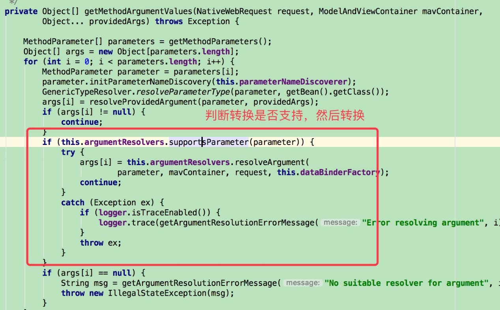{width=”5.768055555555556in” height=”3.5730391513560806in”}
而argumentResolver就是请求的转换处理了，比如常用的\@RequestParam、\@PathVariable等。
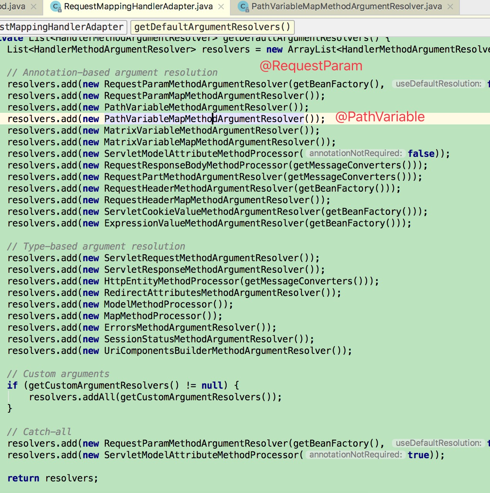{width=”5.768055555555556in” height=”5.798038057742782in”}
当请求处理完成后，就会进行返回内容的处理。
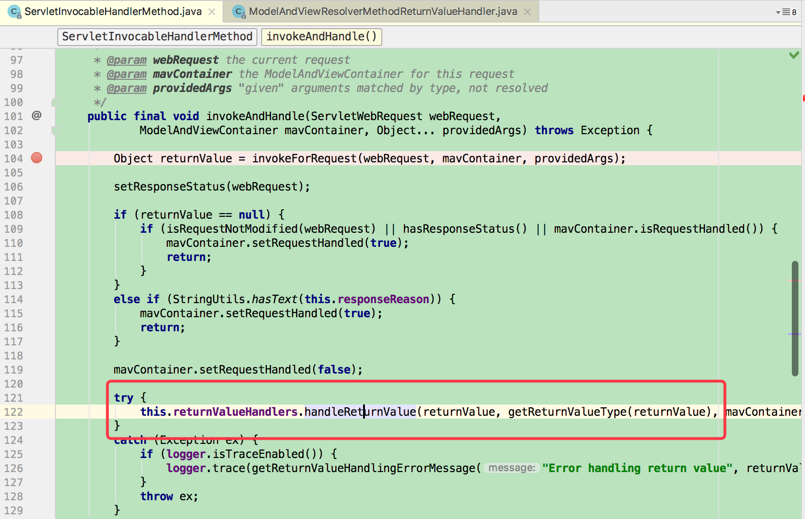{width=”5.768055555555556in” height=”3.7222222222222223in”}
通常我们使用的\@ResponseBody标签就是在AbstractMessageConverterMethodProcessor中进行处理。
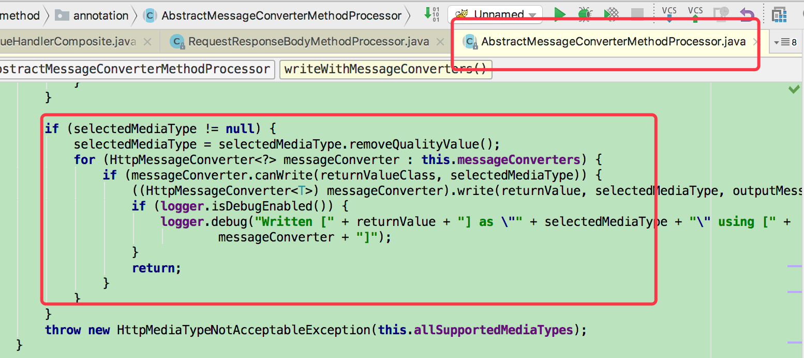{width=”5.768055555555556in” height=”2.5756944444444443in”}
而转换的内容就是在配置文件中的具体转换器，例如json、xml的格式转换。
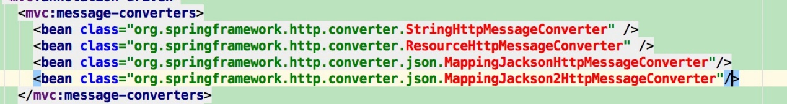{width=”5.768055555555556in” height=”0.7720253718285215in”}